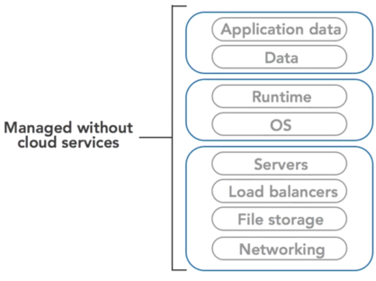
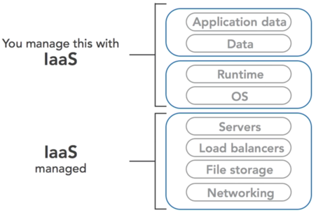
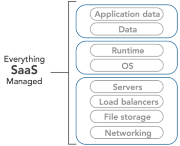
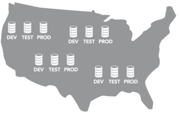
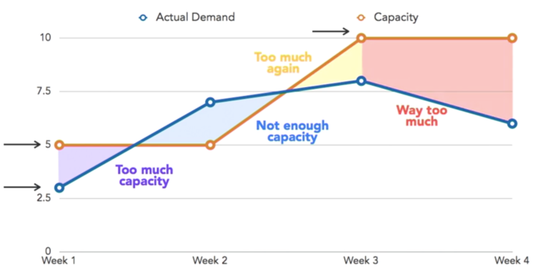
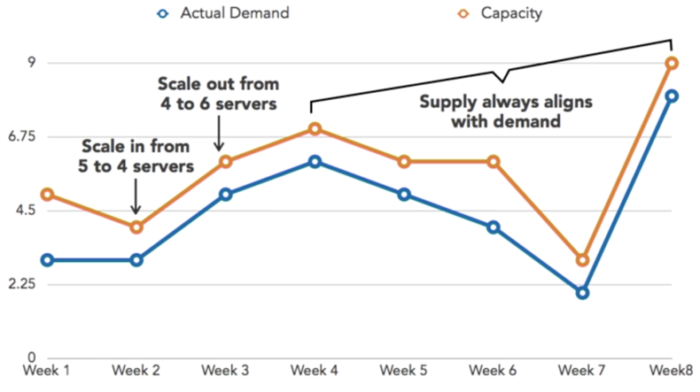

The Cloud- IasS – Infrastructure as a service
- PaaS – Platform as a service
- SaaS – Software as a service


With Software as a Service, everything is managed for the client.

Amazon Web Services provides a range of services that span all three categories.
Business Benefits
- Minimize upfront investment
- Just-In-Time Infrastructure
- Have access when needed at the time needed
- Prevents wasted investment
- Cloud scability
- Increases and decrement capacity
- Not Long-Term Contracts
Technical Benefit
Scriptable Infrastructure – The AWS suite provides APIs which allows for
automation and incorporation of other services.
Applications can be scaled out, in, up, and down to match demand without any human intervention. This is done in an automated fashion.
On-Demand scaling – Scales depends on the demand forecast.
Improved development lifecyle
🗄Production → 🗄Development → 🗄Test

High availability and disaster recover benefits – The cloud provides services allowing applications to be distributed and replicated across multiple geographic locations.
Scalable Architectures
Cloud infrastructure can easily scale out, in, up, or down, depending on the needs of the system.
Scaling Out – Horizontal scaling
• Capacity is added to a system by adding more components or nodes that make up the system.
• Adding more web servers to handle the increase in traffic.
Scaling In – Horizontal scaling
• Capacity is decreased in a system by removing more components or nodes that make up the system.
Scaling Up – Vertical scaling
• Resources are added to a single component or node in the system in order to increase its capacity to handle load.
• Increasing RAM
• Increasing the number of CPUs
Scaling Down – Vertical scaling
• Resources are removed from a single component or node in the system in order to decrease its capacity.
The application itself needs to be designed in a manner to take advantage of scalability.
Understand Elasticity
The
elastic nature of the cloud refers to its ability to accomodate changes in load and demand of the system.
The following graph demonstrates fixed capacity. It is quite evident that there is a problem, for the actual demand and capacity are not sync.

The follow graph demonstrate Amazon Web Services elastic properties in action.

Server metrics such as CPU utilization can be monitored. When the utilization rises above a certain threshold, the application can scale out and keep customers happy. And, if levels again dip below certain thresholds, the application can scale in without impacting customer satisfaction.
Elasticity is one of the fundamental properties of the cloud.
This power to quickly scale computing resources in, out, up, and down will ultimately drive a lot of the benefits of using the cloud.
Cloud Constraints
It important to recognize that at time the cloud might be able to satisfy the needs of our application or our cloud needs. However, it might be possible to get more resources to compensate.
For example, if one needed a cloud infrastructure with a big amount of RAM in order to satisfy our purposes, one could consider Amazon ElastiCache which provides distributed memory cache.
Another example, if you don’t have an extact database server match, perhaps you should consider AWS RDS.
If at first it seems like constraints are being hit with cloud infrastructure, which in theory is infinitely scalable, it's likely due to the application architecture not being built in a scalable manner. These should not be thought of as constraints, but rather opportunities to remove fixed barriers by combining services and resources. Doing so results in improved scalability and overall performance of an application.
The cloud provides many building blocks from which to construct a new system.
Any apparent constraints when evaluating cloud-based resources are most likely just differences between scalable architectures and rigid fixed ones.
Roles of an AWS Administrator
The cloud demands that system administrators think even more about automation because the infrastructure they are administering is now programmable.
It is important to know quite bit of command-line and scipt languages than before.
Database Administrators (DBA)- Using APIs and scripting changes
- Needs to be aware of using virtual machines for deployment
- Geographical distributed systems
- Different data storage options